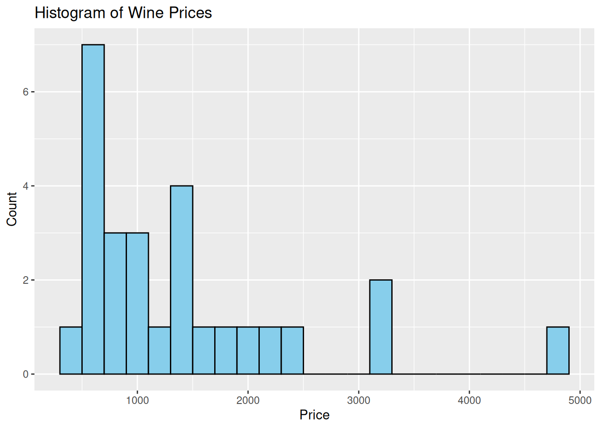
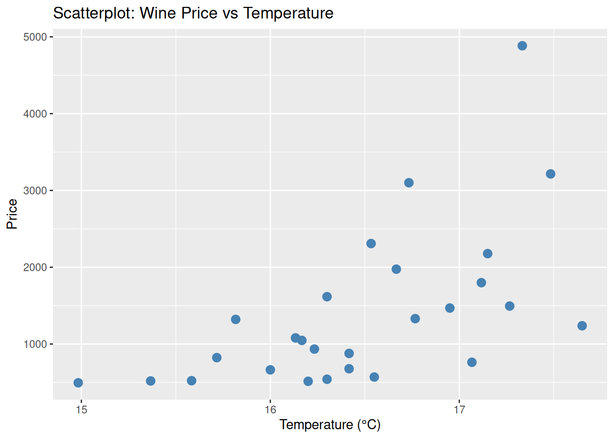

Bjørnar’s assignment in Gretl
Inline equations \(\theta=2+2\)
Exercise 1
obs price WinterRain temp HarvestRain Age
Min. :1952 Min. : 495.2 Min. :376.0 Min. :14.98 Min. : 38.0 Min. : 3.00
1st Qu.:1959 1st Qu.: 670.8 1st Qu.:543.5 1st Qu.:16.15 1st Qu.: 88.0 1st Qu.: 9.50
Median :1966 Median :1079.8 Median :600.0 Median :16.42 Median :123.0 Median :16.00
Mean :1966 Mean :1405.8 Mean :608.4 Mean :16.48 Mean :144.8 Mean :16.19
3rd Qu.:1973 3rd Qu.:1707.7 3rd Qu.:705.5 3rd Qu.:17.01 3rd Qu.:185.5 3rd Qu.:22.50
Max. :1980 Max. :4883.9 Max. :830.0 Max. :17.65 Max. :292.0 Max. :31.00
NA's :2 NA's :2 NA's :2 NA's :2 NA's :2

Exercise 2
Model 1 \[ price_i = \beta_0 + \beta_1Age_i + u_i \]
Model 3: OLS, using observations 1–29
Dependent variable: price
Coefficient Std. Error t-ratio p-value
const 494.278 402.112 1.229 0.2304
Age 56.318 22.222 2.534 0.0179 **
R-squared: 0.2043
Adjusted R-squared: 0.1728
F-statistic: 6.420
P-value (F): 0.0179For each year the wine gets older, its price is expected to increase by 56.318 units.
P-value (0.0179)>α(0.01)
Significance level (α) = 0.01 (1%)
\(H_0: \beta = 0\)
\(H_1: \beta \ne 0\)
P-value is higher than 0.01, that means age is not statistically significant.
Age Predicted_Price
1 3.00000 663.23
2 16.18519 1405.80
3 31.00000 2240.15Exercise 3
Model 2 \[ price_i = \beta_0 + \beta_1Age_i + \beta_2WinterRain_i +\beta_3temp_i + \beta_3HarvestRain_i + u_i \\ \]
Model 4: OLS, using observations 1952-1980 (T = 27)
Missing or incomplete observations dropped: 2
Dependent variable: price
coefficient std. error t-ratio p-value
-------------------------------------------------------------
const −15509,0 3379,87 −4,589 0,0001 ***
Age 39,2126 14,3490 2,733 0,0121 **
WinterRain 2,75098 0,965119 2,850 0,0093 ***
temp 930,787 190,557 4,885 6,97e-05 ***
HarvestRain −5,04694 1,61682 −3,122 0,0050 ***
Mean dependent var 1405,800 S.D. dependent var 1027,226
Sum squared resid 7238994 S.E. of regression 573,6246
R-squared 0,736141 Adjusted R-squared 0,688166
F(4, 22) 15,34443 P-value(F) 3,93e-06
Log-likelihood −207,0499 Akaike criterion 424,0999
Schwarz criterion 430,5791 Hannan-Quinn 426,0265Age:
Coefficient = 39.21
P-value = 0.0121
Wine price increases by 39.21 each year.
WinterRain:
Coefficient = 2.75
P-value = 0.0093
Wine price increases by 2.75 each mm winter rainfall.
Temperature:
Coefficient = 930.79
P-value = 0.00007
Wine price increases by 930.79 every 1 degree.
HarvestRain
Coefficient = -5.05
P-value = 0.0050
Wine price decreases by 5.05 each additional 1 mm HarvestRain
Adding more variables improves the model to explain the wine prices.
Exercise 4
Model 3 \[ price_i = \beta_0 + \beta_1Dheavyraint_i + \beta_2tempt_i + \beta_3temp_i · Dheavyrain_i + u_i \]
Model 2: OLS, using observations 1952-1980 (T = 27)
Missing or incomplete observations dropped: 2
Dependent variable: price
coefficient std. error t-ratio p-value
--------------------------------------------------------------
const −16289,5 4395,18 −3,706 0,0012 ***
Dheavyrain 11634,1 8990,38 1,294 0,2085
temp 1082,95 266,391 4,065 0,0005 ***
temp_Dheavyrain −756,902 546,064 −1,386 0,1790
Mean dependent var 1405,800 S.D. dependent var 1027,226
Sum squared resid 14038659 S.E. of regression 781,2660
R-squared 0,488295 Adjusted R-squared 0,421550
F(3, 23) 7,315911 P-value(F) 0,001294
Log-likelihood −215,9914 Akaike criterion 439,9829
Schwarz criterion 445,1662 Hannan-Quinn 441,5242
Excluding the constant, p-value was highest for variable 6 (Dheavyrain)Temp * Dheavyrain captures whether the impact of temperature on price depends on harvest rainfall. Dheavyrain captures the shift in wine price when harvest rainfall is very high, regardless of temperature.
Exercise 5
| Model | Actual Price | Predicted Price | Residual |
|---|---|---|---|
| Model 1 | 4883.90 | 1733.28 | 3150.62 |
| Model 2 | 4883.90 | 3578.80 | 1305.10 |
| Model 3 | 4883.90 | 2481.70 | 2402.20 |
Model 2 is the best model for predicting Bordeaux wine price.
It hast multiple significant variables and is a better fit.
Conclusions
In this document (Kivedal 2023)
Number of words in the document:
[1] 823Appendix
R-code
```{r}
## Internal
library(OEKA201AssignmentHJ)
## External
library(readr)
library(broom)
library(gretlR)
suppressPackageStartupMessages(library(dplyr))
# Settings
hlim <- 200
# Reading data
iwine <- wine
owine <- iwine %>%
# variables in use
dplyr::select(price, WinterRain, temp, HarvestRain, Age) %>%
## interaction effects
dplyr::mutate(Dheavyraint=ifelse(HarvestRain>hlim,1,0)) %>%
## na ommit
stats::na.omit()
### Exercise 1
sds <- summary(owine)
cds <- cor(owine)
### Exercise 2
for1 <- price ~ Age
mod1 <- lm(for1,data=owine)
pv1 <- predict(mod1, newdata = owine)
nd2 <- data.frame(Age = 1961)
pv2 <- predict(mod1, newdata = owine, interval = "prediction", level = 0.95)
### Exercise 3
for2 <- price ~ Age + WinterRain + temp + HarvestRain
mod2 <- lm(for2,data=owine)
### Exercise 4
for3 <- price ~ Age + WinterRain + temp + HarvestRain + Dheavyraint
mod3 <- lm(for3,data=owine)
### Exercise 5
res1 <- resid(mod1)
res2 <- resid(mod2)
res3 <- resid(mod3)
resf <- data.frame(res1,res2,res3)
```References
Kivedal, Bjørnar Karlsen. 2023. Anvendt Statistikk Og Økonometri. "Universitetsforlaget".